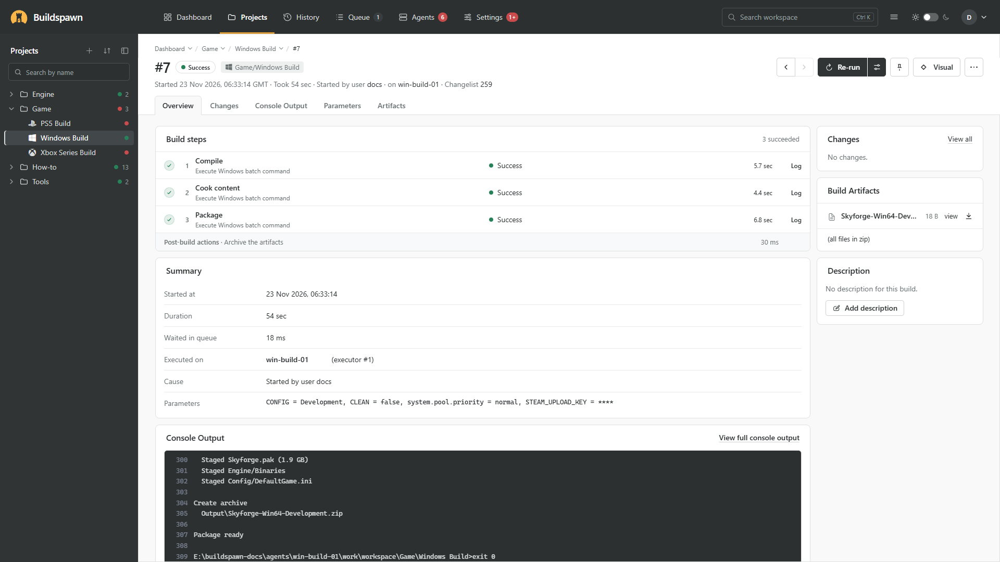
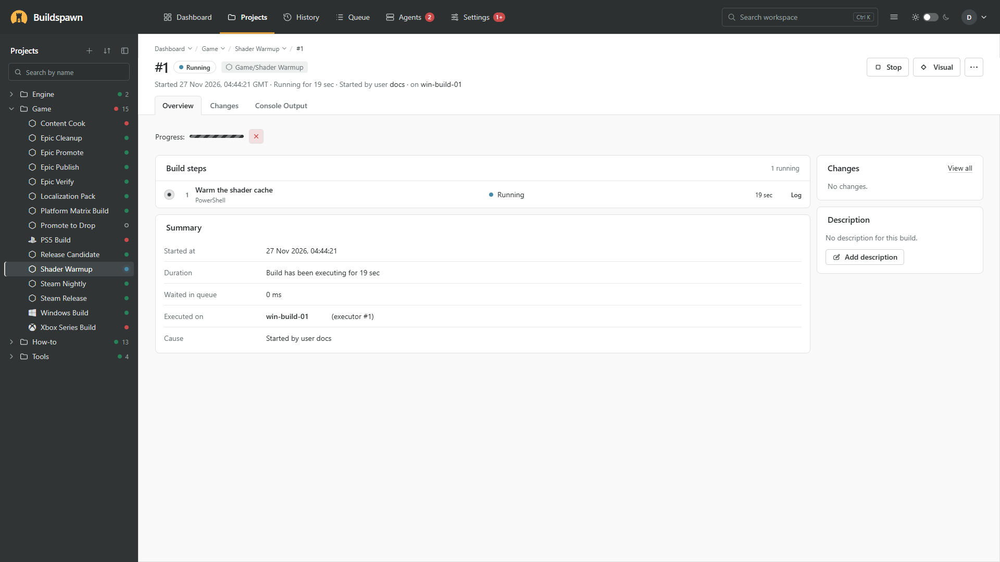
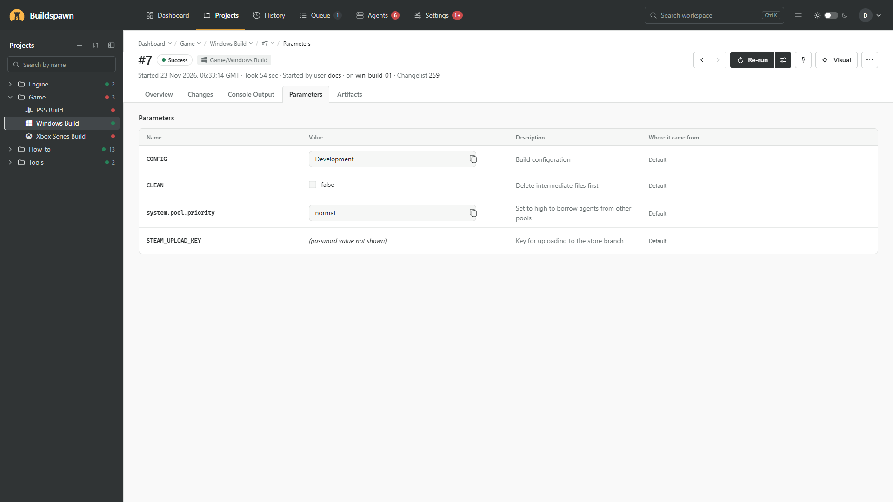
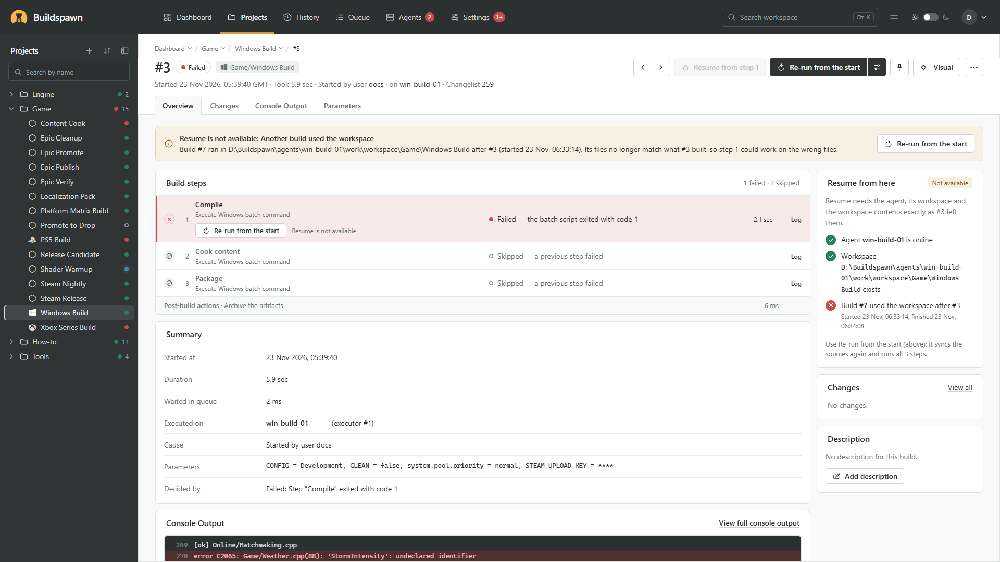

The build page
Each build has its own page. It shows how the build went, where it ran, what it built and what to do next.

Open a build
- Click a build number in the History tab of a build configuration, or on the History page in the top bar.
- Click a build in the chart or list on the build configuration's Overview tab.
- On the Agents page, click the build an agent is running.
- Click a build in the Queue once it has started.
- Press Ctrl + K and type the build configuration's name.
The header
The band at the top is the same on every tab of the build.
| Part | What it shows |
|---|---|
| Build number and status chip | For example #7 Success. Other states are Running, Failed, Unstable and Aborted. A script can give the build a different name and status text. See The build name and status text. |
| Build configuration chip | The project and build configuration, with its platform icon. Click it to go to the build configuration. A Personal chip marks a personal build. |
| Info line | When it started, how long it took, who or what started it, the agent it ran on, and the Perforce changelist or Git commit it built. |
| Previous / next | The two arrow buttons step to the build before and after this one. |
| Resume from step N | On a failed or stopped build: starts a new build at the failed step. Greyed out, with the reason, when it cannot resume. See Resume a build. |
| Re-run | Runs the build again with the same settings. It reads Re-run from the start and is the main button when a resume is not possible. The button beside it, with the sliders, opens the dialog Re-run with changes…. See Re-run a build. |
| Stop | Replaces Re-run while the build runs. See Stop a build. |
| Share / Stop sharing | On a personal build you started. See Shared builds. |
| Promote… | On a finished build that other build configurations depend on: starts the builds that use it, with this build as their source. |
| Pin | Keeps this build forever, so clean-up rules never delete it. Its tooltip says Keep this build forever. A pinned build shows a filled pin. |
| Visual | Opens the build in the visual editor's run view, drawn over the graph of steps. See Run view. |
| … (More actions) | Edit the build's name and description, label the build in Perforce, or delete it. |
On a personal build, a note under the title says who can see it: Only you can see this build, Only name and admins can see this build or, on a shared one, that people with the link can view it. It also says that the build does not change the build configuration's status or Last successful, and does not start other build configurations.
A running build
While a build runs, the header shows Running, a Stop button instead of Re-run, and a progress bar. The bar compares the time so far with the usual duration of this build configuration. When the build takes longer than usual, the bar says so. The fastest way to see what a running build does is the Console Output tab. It follows the output live. See The build console.

The Overview tab
| Card | What it holds |
|---|---|
| Build steps | Every step with its status, a short reason, and its duration, for example Failed — the batch script exited with code 1 or Skipped — a previous step failed. Click Log on a step to jump to it in the console. A step whose tests failed shows Unstable. Post-build actions are on the last line. Steps of a resumed build show Done in #1. |
| Summary | Started at, Duration, Waited in queue, Executed on (agent and executor), Cause, Parameters, and for a failed build Decided by, which says what made it fail, for example Failed: Step "Compile" exited with code 1. A personal build has a Personal build row. A re-run says Re-run of #6 by you with a link to the original. |
| Version control details | The revision, repository and branch, or the changelist. |
| Resume from here / Resumed from | On a failed build, the three checks for a resume. On a resumed build, the agent and workspace it continued in. |
| Matrix | For a build with a Matrix block: a grid of the combinations. See Side builds. |
| Parallel tests | For a build with the Parallel tests feature: one row for each batch. |
| Console Output | The last lines of the log, with a link View full console output. |
| Tests | A one-line summary of the test results. |
| Changes | The newest changes in this build. View all opens the Changes tab. |
| Build Artifacts | The files this build kept, with all files in zip. Shown when the build kept any. |
| Description | A note about the build. Click Add description to write one, for example Release candidate for QA. |
The tabs
Which tabs you see depends on the build configuration. The usual ones are:
| Tab | What it holds |
|---|---|
| Overview | Steps, summary, changes and description. |
| Changes | The commits or changelists that are new since the previous build. See Changes, artifacts and tests. |
| Console Output | The full log, in blocks, with times, filters and search. |
| Parameters | The parameter values this build used, with a description and where each value came from (for example Default). A password shows password value not shown. |
| Artifacts | The files the build kept, when it kept any. |
| Test Result | Passed, failed and skipped tests, when the build published a test report. |
| Git Build Data | The Git revisions and branches the build saw (Git roots only). |

A failed build

See Find out why a build failed for the quickest way from here to the cause.
Problems and fixes
| Problem | What to do |
|---|---|
| A tab you expect is missing. | Artifacts appears only when the build kept files, and Test Result only when it published a test report. |
| The build page says page not found. | It may be a personal build of someone else, or you may not see the project. Ask for a share link or the project viewer role. |
| The progress bar never fills. | The bar uses the usual duration. A build configuration with few builds has no usual duration yet. |
Tips
- The address of a build page is easy to share: send it to a colleague and they land on the same tab.
- To step through builds quickly, use the previous / next arrows in the header.
- Compare two builds side by side: see Compare two builds.